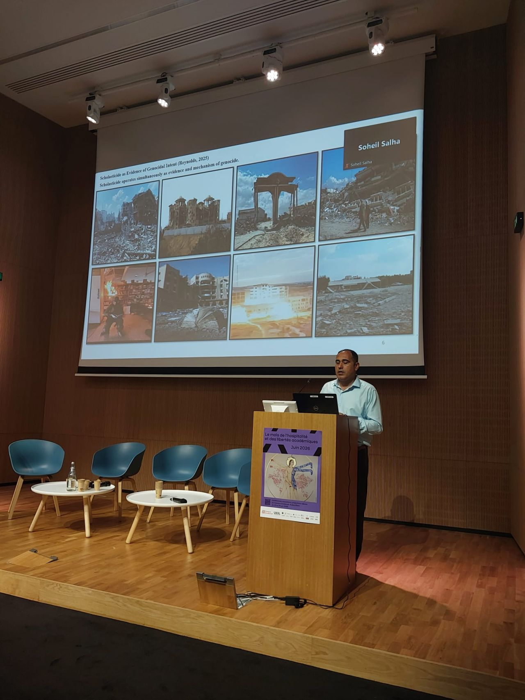
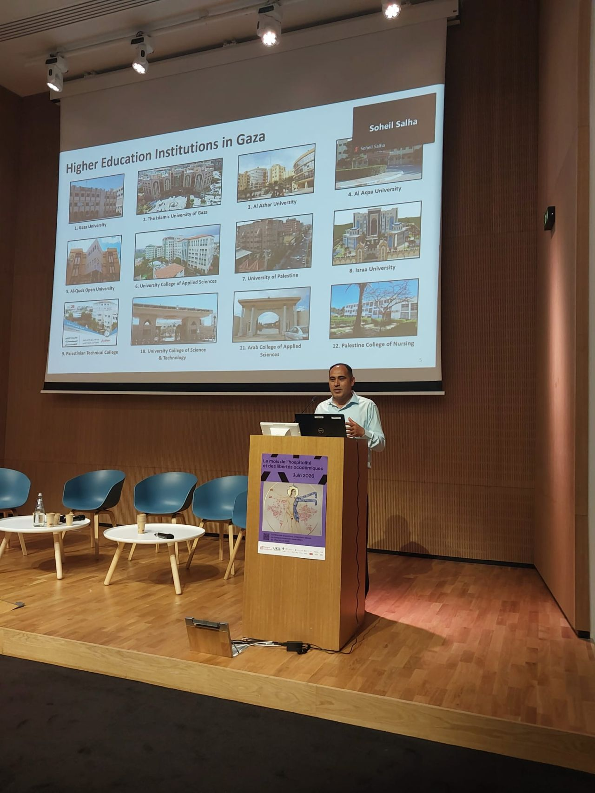

Research & Public Dialogue
Paris Event Highlights Research on Reimagining Higher Education in Gaza
Dr. Wesam Amer was invited to contribute to the Week of Hospitality and Academic Freedoms in Paris, where he presented his research on reimagining higher education in Gaza. His participation brought Palestinian academic perspectives into an international dialogue on academic resilience, institutional recovery, and the future of higher education in conflict-affected contexts.
Dr. Wesam Amer participated in the Week of Hospitality and Academic Freedoms, organised by the Universities in Exile (UXIL) programme at Campus Condorcet in Paris in June 2026. The event formed part of a broader international initiative dedicated to academic freedom, knowledge protection, and support for scholars working under conditions of conflict, displacement, and crisis.
As part of the programme, the ICM-Palestine initiative was invited to contribute on 22 June 2026, providing a platform for showcasing ongoing research undertaken by ICM-Palestine Laureates. Within this framework, Dr. Amer presented his research on reimagining higher education in Gaza amid ongoing destruction and systemic challenges, bringing attention to the future of universities and knowledge production in one of the world's most challenging educational environments.
Through his presentation, Dr. Amer highlighted the pressing challenges facing higher education institutions in Gaza while emphasizing the need to move beyond emergency responses and short-term interventions. His contribution focused on the importance of developing sustainable pathways for academic recovery, institutional rebuilding, and long-term transformation.
The discussions brought together international scholars, academic leaders, and practitioners committed to defending academic freedoms and supporting endangered knowledge systems. Participants examined how universities and research communities can respond to the erosion of academic infrastructures caused by war, displacement, and political instability
A central theme emerging from the event was the resilience of academic communities in the face of adversity. Discussions also underscored the critical role of international collaboration, scholarly solidarity, and cross-border partnerships in ensuring that higher education institutions can continue to serve their societies despite severe disruptions.
Dr. Amer's participation ensured that the experience of Palestinian higher education was represented within a broader global conversation on academic freedom and institutional resilience. His contribution reinforced the importance of long-term strategies that prioritize not only recovery but also the reimagining and renewal of higher education systems in conflict-affected settings.
Campus Condorcet UXIL → Campus Condorcet Month of Hospitality →


